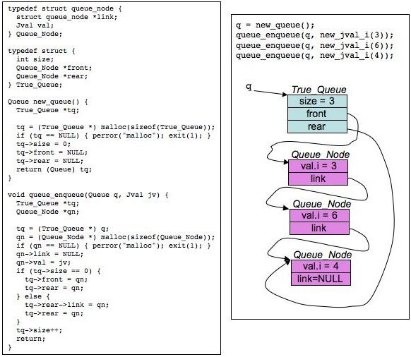

CS140 Midterm Exam - October 10, 2006
Jim Plank
Answer all questions. Do so on a separate sheet of paper.
Question 1
Recall the following pictoral example of an implementation
of some queue operations:

Implement queue_dequeue(), which has the following prototype:
Jval queue_dequeue(Queue q);
Recall that Queue is a (void *).
Question 2
Behold the following C program:
#include < stdio.h >
#include < string.h >
main()
{
char *s, *s2, *x, **y;
s = strdup("Juice-em!");
s2 = strdup(s);
x = strchr(s, 'e');
y = &x;
x[1] = '*';
printf("0x%x 0x%x 0x%x\n",
s, s2, y);
printf("0x%x\n", x);
printf("0x%x\n", &x);
printf("0x%x\n", y);
printf("0x%x\n", *y);
printf("%c\n", s[1]);
printf("%c\n", *x);
printf("0x%x\n", &(s[1]));
printf("%s %s %s\n",
s, s2, x);
*y = s2 + 2;
*x = 'X';
printf("0x%x\n", x);
printf("%s %s %s\n",
s, s2, x);
}
|
When we run this program, the first line of output is:
| 0x500120 0x500130 0xbfffed28 |
What are the remaining lines of output?
Question 3
You are to write a program pan.c which prints out all
numeric command line arguments as decimal numbers padded to three
decimal places. The program should ignore non-numeric command line
arguments.
For each of the following eight programs, state whether it is correct, and then
state what the output of the program will be when the command line arguments are:
| pan -43.55001 Fred 0 66.440 Luther4 |
A.
main(int argc, char **argv)
{
int i; double d;
for (i = 1; i < argc; i++) {
d = atof(argv[i]);
if (d != 0) printf("%.3lf\n", d);
}
}
|
|
B.
main(int argc, char **argv)
{
int i; double d;
while (scanf("%lf", &d) == 1) {
printf("%.3lf\n", d);
}
}
|
|
|
C.
main(int argc, char **argv)
{
int i; double d;
for (i = 1; i < argc; i++) {
if (sscanf(argv[i], "%lf", &d) == 1) {
printf("%.3lf\n", d);
}
}
}
|
|
D.
main(int argc, char **argv)
{
int i; double d;
for (i = 1; i < argc; i++) {
if (sscanf(argv[i], "%lf", d) == 1) {
printf("%.3lf\n", d);
}
}
}
|
|
|
E.
main(int argc, char **argv)
{
int i, j; double d;
for (i = 1; i < argc; i++) {
j = sscanf(argv[i], "%lf", &d);
if (j == 1) printf("%.3lf\n", d);
}
}
|
|
F.
main(int argc, char **argv)
{
int i; double d;
for (i = 1; i < argc; i++) {
d = atoi(argv[i]);
if (d != 0) printf("%.3lf\n", d);
}
}
|
|
|
G.
main(int argc, char **argv)
{
int i, j, d;
for (i = 1; i < argc; i++) {
j = sscanf(argv[i], "%lf", &d);
if (j == 1) printf("%.3d\n", d);
}
}
|
|
H.
main(int argc, char **argv)
{
int i; double d;
while (1) {
i = scanf("%lf", &d);
if (i == EOF) exit(0);
if (i == 1) printf("%.3lf\n", d);
}
}
|
|
|
Question 4
Behold the following file:
Cutie the bomb
Met her at a beauty salon
With a baby louis vuitton
Under her under arm |
What is the output when that file is given as standard input to the
following program:
main()
{
int i, j, ne;
IS is;
Stack s;
Queue q;
Jval jv;
j = 0;
ne = 0;
s = new_stack();
q = new_queue();
is = new_inputstruct(NULL);
while (get_line(is) >= 0) {
for (i = 0; i < is->NF; i++) {
if (j%3 == 0 || j%3 == 2) {
queue_enqueue(q, new_jval_s(strdup(is->fields[i])));
ne++;
}
if (j%3 == 1 || j%3 == 2) {
stack_push(s, new_jval_i(strlen(is->fields[i])));
ne++;
}
j++;
}
}
while (!stack_empty(s)) {
jv = stack_pop(s);
printf("%d ", jv.i);
}
printf("\n");
while (!queue_empty(q)) {
jv = queue_dequeue(q);
printf("%s ", jv.s);
}
printf("\n");
printf("%d\n", ne);
exit(0);
} |
Question 5
Your eight-year-old daughter gets email access from AOL, so that she can send you email
while you're out of town. She does so, but decides to send you messages by holding
each key down for a few seconds. Oh, and of course she keeps the Caps-Lock key
on. So "Hi Daddy!" becomes "HHHHHHIIIIIIIIIDDDDDDDAAAAADDDDDDDDDDDDDDDYYYYYY!!!!!!!!!".
The first time you receive such a message, it's cute. The second time, it's
kind of irritating. On the third time, you conclude that it's easier to
write a program to read her email than it is to convince her to write in
a more conventional fashion.
So you write a program that reads from standard input, and converts multiple consecutive
instances of a character to simply one instance. Sure, it's not perfect, but it
makes the emails readable. For example,
SSSSSOOOOOORRRRRRRRRRRRRRYYYYYYYIIIIIIITTTTTTTT''''''''SSSSSSSIIIIIIIRRRRRRRRRR
IIIIIIITTTTTAAAATTTTTTTIIIIIIIIIINNNNNNNGGGGGGBBBBBBBUUUUUUUUUTTTTTTTTTTIIIIIII
LLLLLLLLLLLIIIIIIIIKKKKKKKKKEEEEEEEEIIIIIIIITTTTTTTTTTTT
HHHHHHHHAAAAAAAVVVVVVEEEEEEYYYYYYOOOOOOOUUUUUUFFFFFFFEEEEEEEDDDDDDDDYYYYYYYOOOOO
UUUUUUUURRRRRRRRNNNNNNNEEEEEEEOOOOOOOOPPPPPPPEEEEEEEETTTTTTYYYYYYYEEEEEEETTTT????????
LLLLLLLOOOOOOOVVVVVVVEEEEEEEEEEEEEMMMMMMMMEEEEEEEEEEKKKKKKKKEEEEEERRRRR!!!!!!!!
Becomes:
SORYIT'SIR
ITATINGBUTI
LIKEIT
HAVEYOUFEDYO
URNEOPETYET?
LOVEMEKER!
Write this program.
Do not put your answer here -- put it on a separate
sheet of paper!!!!
Prototypes
typedef union {
int i;
long l;
float f;
double d;
void *v;
char *s;
char c;
unsigned char uc;
short sh;
unsigned short ush;
unsigned int ui;
int iarray[2];
float farray[2];
char carray[8];
unsigned char ucarray[8];
} Jval;
Jval new_jval_i(int);
Jval new_jval_l(long);
Jval new_jval_f(float);
Jval new_jval_d(double);
Jval new_jval_v(/* void */);
Jval new_jval_s(char *);
|
char *strdup(char *s);
void strcpy(char *dest, char *source);
char *strchr(char *s, int ch);
char *strrchr(char *s, int ch);
char *strstr(char *s, char *tofind);
int getchar();
|
|
---
|
#define MAXLEN 1001
#define MAXFIELDS 1000
typedef struct inputstruct {
char *name;
FILE *f;
int line;
char text1[MAXLEN];
char text2[MAXLEN];
int NF;
char *fields[MAXFIELDS];
int file;
} *IS;
IS new_inputstruct(char *name);
int get_line(/* IS */);
void jettison_inputstruct(/* IS */);
|
typedef void *Queue;
Queue new_queue();
void queue_enqueue(Queue q, Jval v);
Jval queue_dequeue(Queue q, Jval v);
int queue_empty(Queue q);
typedef void *Stack;
Stack new_stack();
void stack_push(Stack s, Jval v);
Jval stack_pop(Stack s, Jval v);
int stack_empty(Stack s);
|
|